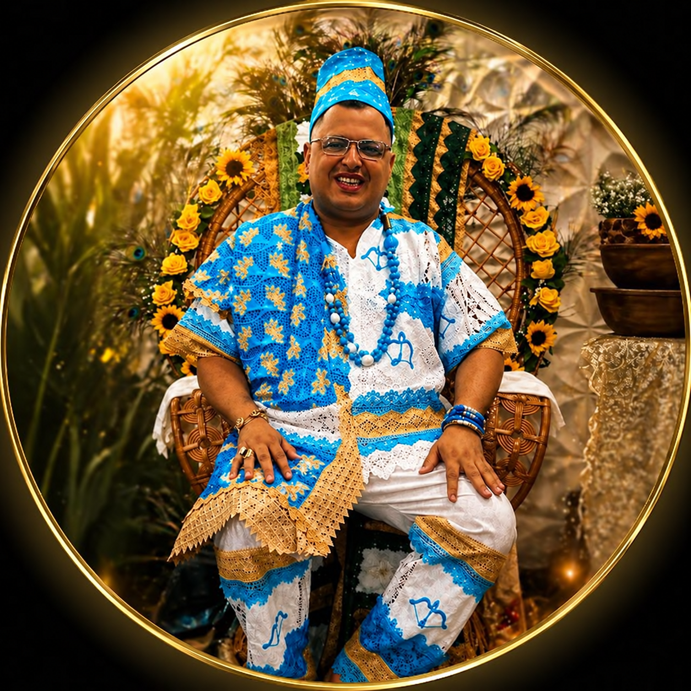
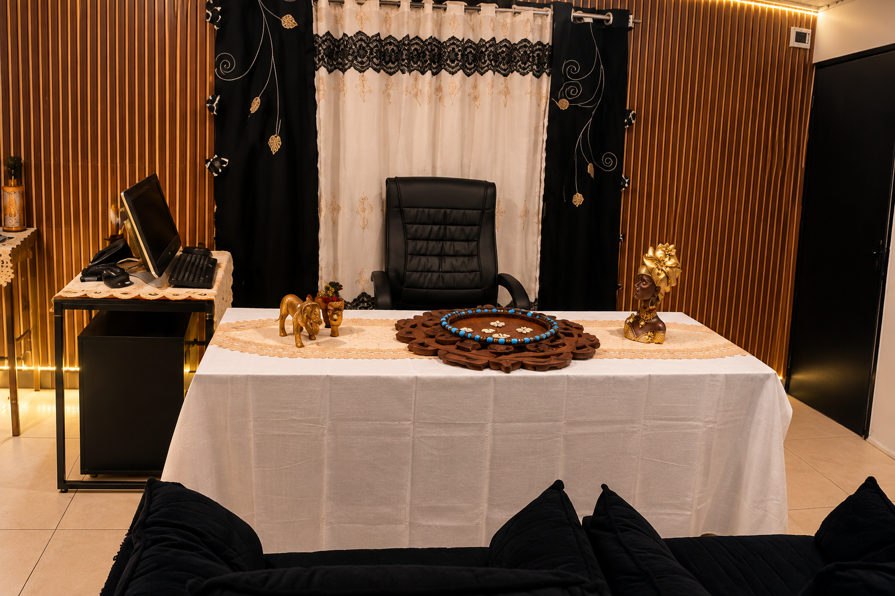
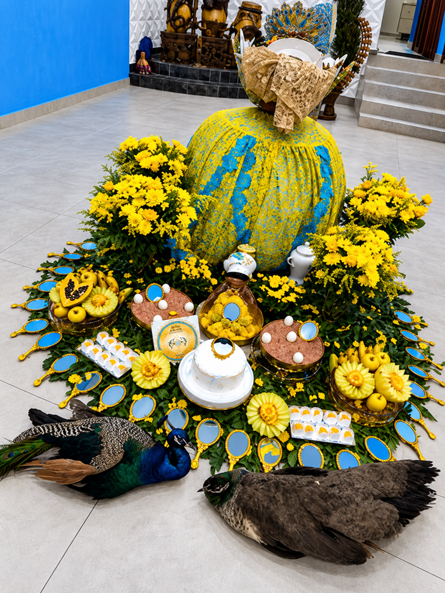

Amarração amorosa
Para situações em que a pessoa busca compreender possibilidades de aproximação ou reconciliação amorosa.
Saber como é avaliada ↗Candomblé Ketu · desde 2009
Antes de qualquer ritual, existe uma história que precisa ser ouvida. Receba uma avaliação espiritual individual para compreender sua situação amorosa e os caminhos possíveis.

Uma casa religiosa estabelecida
Ferraz de Vasconcelos, São Paulo
Quando o amor vira dúvida
Talvez a pergunta que não sai da sua cabeça seja: “ainda existe algum caminho possível para essa relação?”
Separações, afastamentos, conflitos e relações marcadas por idas e vindas podem trazer ansiedade e falta de clareza. O primeiro passo não é escolher um ritual: é compreender o que você está vivendo.
Clareza antes da decisão
É um trabalho espiritual tradicionalmente procurado por pessoas que desejam buscar aproximação ou reconciliação. No atendimento de Bàbálórìsà Elvis de Osun, não existe indicação automática nem uma solução igual para todos.
A situação é primeiro avaliada por meio do jogo de búzios. Se houver orientação para algum procedimento religioso, sua finalidade, etapas e investimento são explicados com transparência. A decisão de realizar ou não qualquer ritual é sempre do consulente.
Não trabalho com resultados garantidos ou prazos milagrosos. Cada história pede escuta, fundamento e responsabilidade.
Orientação para diferentes momentos
Cada possibilidade é apresentada conforme a história compartilhada e a avaliação espiritual.
Para situações em que a pessoa busca compreender possibilidades de aproximação ou reconciliação amorosa.
Saber como é avaliada ↗Orientações e rituais direcionados a separações, afastamentos e conflitos afetivos.
Trabalhos voltados à busca de equilíbrio, entendimento e fortalecimento dos vínculos.
Procedimentos definidos conforme as particularidades do caso e a orientação espiritual.
Consulta oracular para questões amorosas, pessoais e espirituais, online ou presencial.
Tradição registrada com respeito
Os registros abaixo mostram o espaço de consulta e elementos de rituais realizados no Ilê. Cada procedimento é definido individualmente, somente depois da orientação espiritual.


As imagens foram tratadas a partir de registros enviados pelo Ilê. Elas não representam garantia de resultado nem significam que o mesmo procedimento será indicado para todas as pessoas.
Um caminho claro
Da primeira conversa ao acompanhamento, você sabe o que acontece em cada etapa — sem formulários longos, pressão ou contratação automática.
PIX, dinheiro ou cartão por link de pagamento.
Você apresenta brevemente sua necessidade pelo WhatsApp e recebe as primeiras informações.
São informados o valor da consulta e os horários disponíveis para atendimento.
Sua situação é ouvida com discrição e orientada por meio do jogo de búzios.
Quando pertinente, são explicadas as orientações e opções de procedimentos religiosos.
Finalidade, condições e valores são esclarecidos antes de qualquer contratação.
Quando aplicável, você recebe as orientações relacionadas ao atendimento realizado.
Quem conduz o atendimento
Sacerdote do Candomblé Ketu e dirigente espiritual do Ilê Asé Iya Tafa Wura.
Sua trajetória religiosa teve início formal em 2009. Desde então, reúne aprendizado, obrigações sacerdotais, dedicação à ancestralidade e atendimento a pessoas que buscam orientação para questões afetivas, familiares, pessoais e espirituais.
A atuação não se resume à divulgação de rituais: existe uma identidade religiosa, uma comunidade e uma instituição física que podem ser conhecidas.
Uma instituição que você pode conhecer
A sede física está localizada em Ferraz de Vasconcelos, São Paulo. É neste espaço religioso que Bàbálórìsà Elvis de Osun conduz sua comunidade e realiza atendimentos presenciais mediante agendamento.
Sede físicaFerraz de Vasconcelos · São Paulo
AtendimentoPresencial e online, mediante agendamento
Reputação públicaPerfil verificado pelos próprios visitantes no Google
Confiança que pode ser verificada
A credibilidade não precisa ser apenas anunciada. Conheça o perfil público da instituição e consulte as experiências compartilhadas no Google.
Informação traz segurança
Respostas diretas para você compreender o atendimento antes de tomar qualquer decisão.
Não é possível responder sem conhecer sua história. A indicação nunca é automática: a situação é primeiro compreendida na consulta pelo jogo de búzios.
Sim. A consulta é a etapa de orientação e avaliação. Ela não representa a contratação automática de nenhum ritual.
Não. Os atendimentos podem ser online ou presenciais, sempre mediante agendamento e conforme disponibilidade.
A consulta espiritual pelo jogo de búzios custa R$ 210. Procedimentos religiosos, quando pertinentes, são apresentados e orçados separadamente.
Não. Bàbálórìsà Elvis de Osun não trabalha com resultados garantidos nem prazos milagrosos. Cada situação é analisada individualmente.
As possibilidades são avaliadas na consulta espiritual. Se algum procedimento for pertinente, sua finalidade e etapas são explicadas antes de qualquer decisão.
Sim. O atendimento é conduzido de forma respeitosa e discreta, preservando a privacidade de cada consulente.
Seu primeiro passo pode ser uma conversa
Fale com o atendimento, conheça as condições da consulta e escolha com clareza se deseja agendar.
Falar com Bàbálórìsà Elvis pelo WhatsApp Atendimentos online e presenciais mediante agendamento.